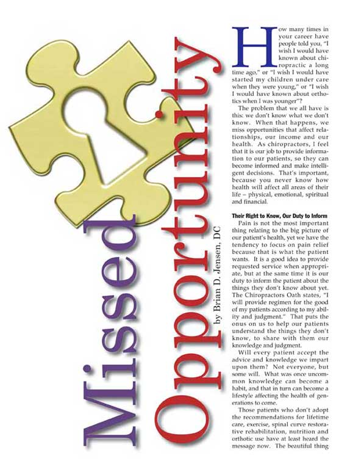
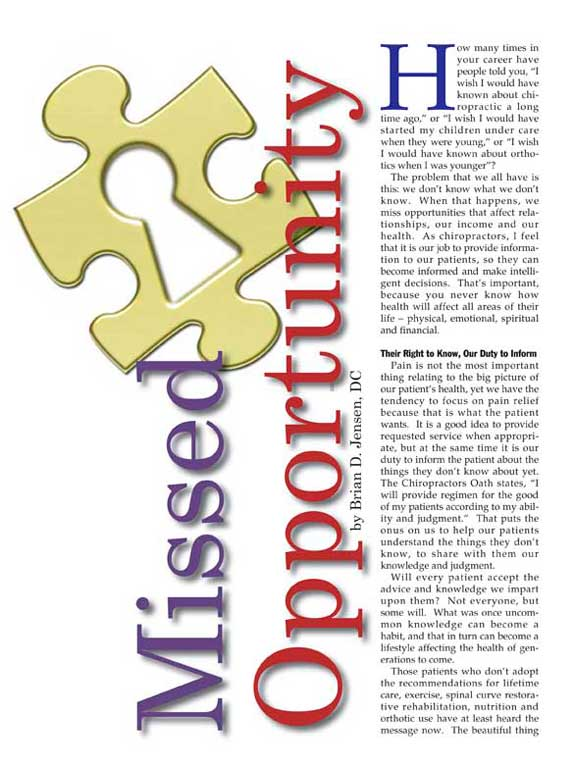
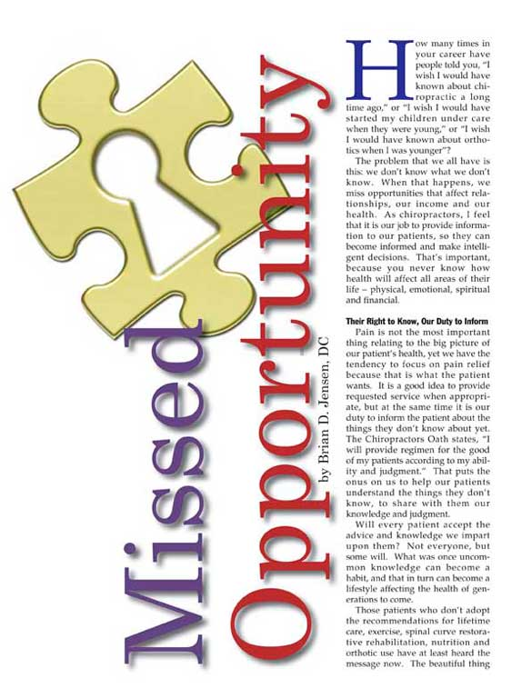
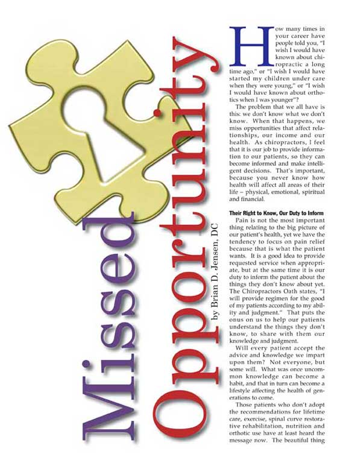

Ad Designs
I have been designing Ads for eighteen years. One of the most interesting aspects of design work to me is that on any given day, even a few hours difference in time, you can see and interpret a project in so many different ways. When handed a bit of text, or a product photo without much else and asked to put something together; you can end up with a different design for no other reason than from what you see or are inspired by at any given moment.
It is a true happiness to find a job that you enjoy and for myself even better when it pushes the boundaries of creativity. At the same time, it is still my job to not just meet but to exceed a clients expectations even when simply giving them exactly what they envision themselves.
So, whether you are here for inspiration for your own designs or, interested in seeing some of the work I've done, enjoy and feel free to contact me with comments or questions.
 


 

Article Designs
Having worked for several magazines throughout my career, articles have become a staple of what I do. There are periods of time where the publisher wanted every article to be identical so that no one article stood out more than another. This was to keep advertisers happy and, though made a quick turn around of an issue both fast and easier, it was then that creating Ads allowed me some form of expression.
On the other end of the spectrum, I have had issues with five or six articles and, this was the norm for every issue I put out. Each article had to look different and, the feature article needed to stand out that much more. This begins to become a challenge when you design around sixty different articles each year but, it is one I always look forward to.
For me, the inspiration for designing articles is different than with Ads. I generally start by simply reading the title. Often times, it's enough to get an idea for the first page or spread. Also, for sometime I was pressed upon to have a pull-quote on every page of each article, which often made layout more difficult because of spacing issues. So part of the challenge was figuring out cute ways to disguise those or, at least make them look different as well.


Miscellaneous Work
Over the years I have also done many other types of design work. I have done brochures, business cards, company logos, flyers, handouts, booth banners, mailers, web banners, coupons and more. Some of these happen rarely, like creating a Corporate ID with logo, new business cards and stationary. Others are a regular thing.
I have done decks of cards that get physically mailed out to people. Almost everyone gets some type of these in the mail, a coupon pack that is basically nothing but mini-advertisements and come in a big envelope. I have done many pieces for these types of mailings. Currently, I am envolved with regularly making coupons for emailing special deals out which is quite similar in concept.